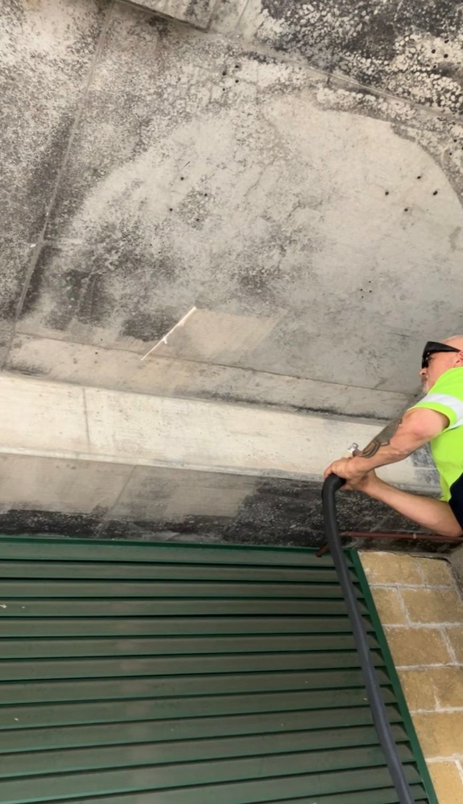

Fire damage and soot removal in Sydney
We remove fire soot and smoke staining with a laser. On a concrete ceiling where pressure washing and chemicals couldn't shift the soot, our 1500W continuous laser did. On a balcony where other methods had already failed, the laser lifted it. The beam reflects off white plasterboard and painted walls while it removes the soot, so restoration doesn't have to mean repainting everything.
Why use a laser
- Shifts soot that pressure washing and chemicals couldn't
- No water through the building and no chemical runoff
- Overhead work: ceilings and soffits
- Can mean less repainting on light surfaces
What we clean
- Concrete ceilings and soffits
- Brick and masonry
- Timber
- Plaster and plasterboard
- Balconies and walls
- Steel structures
Watch a real job
1500W laser clearing fire soot off a concrete ceiling
Which laser we use
Heavy soot on concrete and masonry gets the 1500W continuous laser. Softer and finer surfaces get the 200W pulse laser. Not sure which one your job needs? Send us a photo and we'll tell you.
On site across Sydney, or hire the machine
We bring the machine and an operator to your site, Sydney wide, including Sydney CBD, Inner West, Eastern Suburbs, St George, Sutherland Shire, Canterbury-Bankstown, Western Sydney, Parramatta, Hills District, North Shore, Northern Beaches, South West Sydney. Rather do it yourself? Hire a laser cleaning machine by the day, week or month.
Questions
Can a laser remove soot from a ceiling?
Yes. We've cleared heavy fire soot off concrete ceilings with the 1500W continuous laser where pressure washing and chemicals couldn't.
Do you need to use water?
No. Laser cleaning uses no water, chemicals or grit, so nothing washes through the building.
Do I need to repaint after?
Not always. The beam reflects off white plasterboard and painted walls while it removes the soot. Send a photo and we'll tell you what to expect.
Do you work with insurance and restoration jobs?
Send us the details and photos and we'll quote the job.
Free quote
Text a photo of the job to 0432 722 498 or email zap@sydneylasercleaning.com.au.